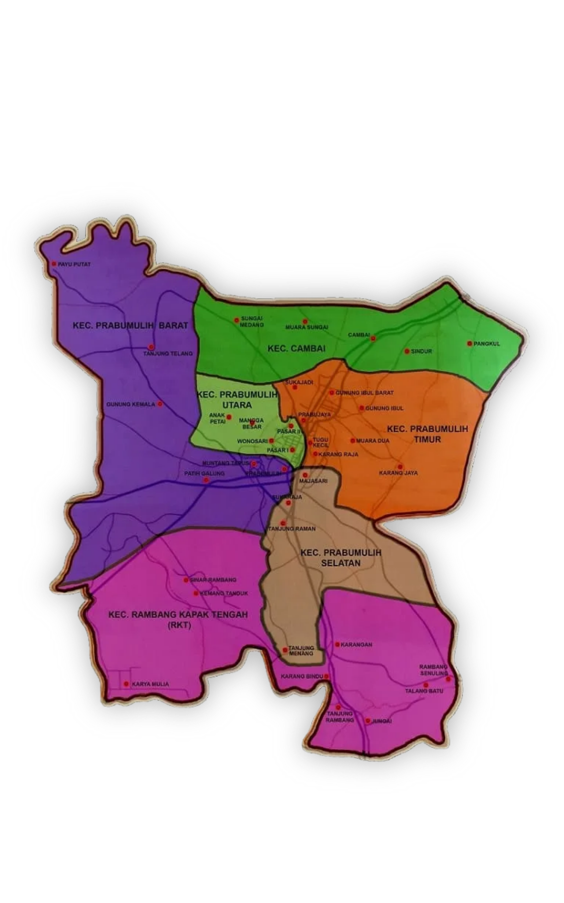
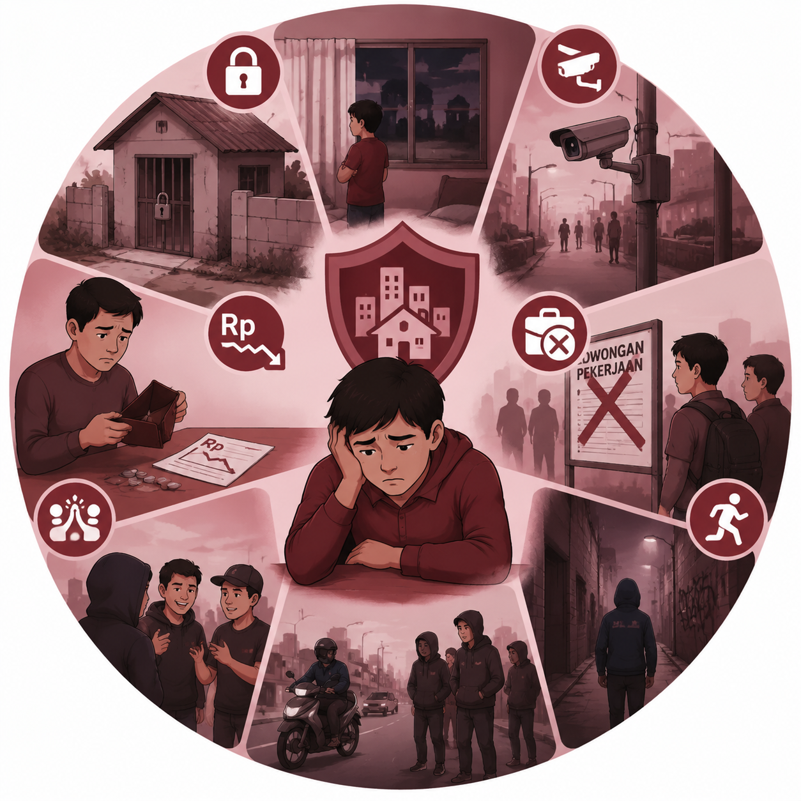
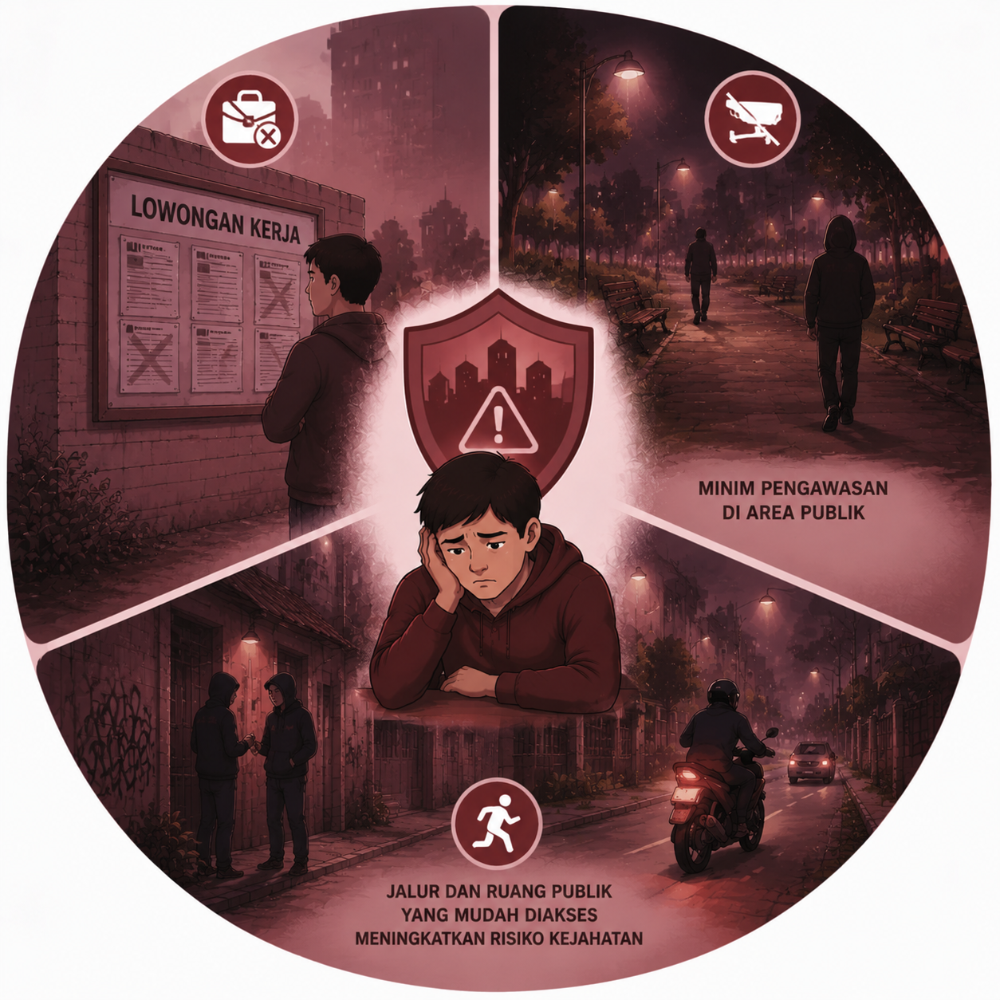

Kota Prabumulih terletak di Provinsi Sumatera Selatan, Indonesia, dengan koordinat 0°13'36″ LS dan 104°13'12″ BT. Kota ini berada di jalur strategis dekat Palembang, sehingga menjadi pusat industri, perdagangan, dan transportasi di wilayah sekitarnya. Secara administratif, Prabumulih terbagi menjadi 6 kecamatan, yaitu Prabumulih Timur, Prabumulih Barat, Prabumulih Selatan, Prabumulih Utara, Cambai, dan Rungkang. Setiap kecamatan memiliki karakteristik berbeda, mulai dari pusat pemerintahan, permukiman padat, hingga area perkebunan dan pertanian, yang semuanya memengaruhi distribusi aktivitas sosial dan ekonomi di kota ini.
Data terbaru menunjukkan bahwa Kota Prabumulih menempati urutan kedua tertinggi dalam kasus kriminalitas di Sumatera Selatan, menjadikan pemetaan aktivitas kriminal di tiap kecamatan sangat penting untuk pengawasan dan mitigasi risiko. Tingkat kriminalitas yang cukup tinggi ini menuntut koordinasi antara aparat keamanan, masyarakat, dan lembaga pemerintah untuk menerapkan strategi pencegahan yang efektif. Informasi geografis dan administratif yang lengkap, dikombinasikan dengan data kriminalitas, menjadi dasar bagi analisis risiko dan perencanaan keamanan kota secara menyeluruh.
| No. | Kabupaten/Kota | Jumlah Kasus (2024) | Luas Wilayah (Km²) | Kasus Per Km² |
|---|---|---|---|---|
| 1. | Kota Palembang | 5.926 | 352,52 | 16,8 |
| 2. | Kab. Musi Banyuasin | 1.108 | 14.550,79 | 0,07 |
| 3. | Kab. Ogan Komering Ilir | 1.031 | 17.075,71 | 0,06 |
| 4. | Kab. Banyuasin | 746 | 12.258,59 | 0,06 |
| 5. | Kota Prabumulih | 528 | 447,31 | 1,18 |

Kerawanan kriminalitas di Kota Prabumulih dipengaruhi oleh kondisi ekonomi yang menurun, rendahnya tingkat pendidikan, dan lingkungan sosial yang tidak sehat. Warga yang kesulitan memenuhi kebutuhan dasar cenderung terdorong mengambil jalan pintas melalui tindak kriminal. Pergaulan remaja yang kurang terkontrol, minimnya dukungan sosial, serta penyalahgunaan narkotika juga memperburuk situasi.

Lingkungan fisik yang terbatas keamanannya, minim pengawasan di rumah dan area publik, serta kekurangan lapangan pekerjaan menciptakan kondisi rawan. Warga yang kurang saling mendukung mempermudah berkembangnya perilaku kriminal, sementara jalur dan ruang publik yang mudah diakses meningkatkan risiko kejahatan.
Karakteristik ruang yang memudahkan pelaku, visibilitas rendah, dan jalur pelarian yang mudah menjadi pemicu kriminalitas. Penyalahgunaan obat terlarang dan aktivitas geng yang merekrut pemuda rentan turut mempertinggi tingkat kejahatan di kawasan perkotaan maupun pinggiran Prabumulih.